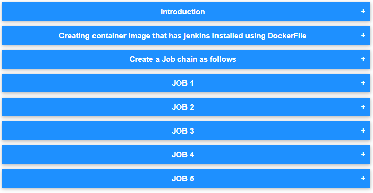
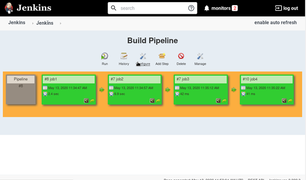
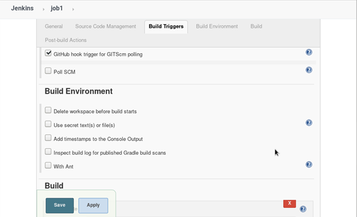
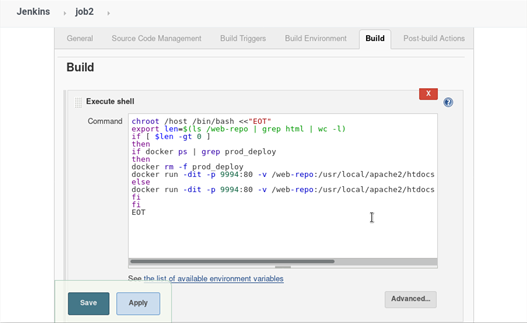
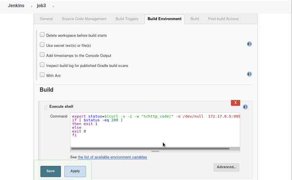
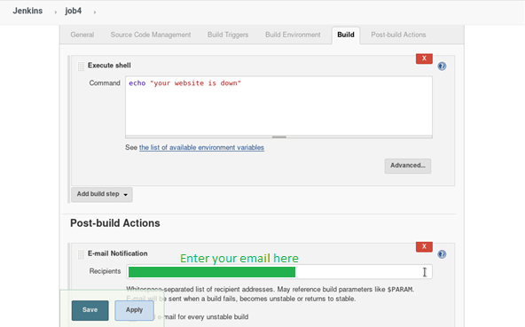

DevOps Tutorial: Automating Web Application using Jenkins, Docker and GitHub.

Read Task 1 as It will help you to understand things in better manner.
If you are already a part of Devops Assembly lines training under Vimal Daga Sir then you will catch the flow. ;)
Go through the steps
JOB 1
Pull the Github repo automatically when some developers push repo to Github.
JOB 2
By looking at the code or program file, Jenkins should automatically start the respective language interpreter install image container to deploy code ( eg. If code is of PHP, then Jenkins should start the container that has PHP already installed )
JOB 3
Test your app if it is working or not.
JOB 4
if app is not working , then send email to developer with error messages.

Create One extra job job5 for monitor : If container where app is running. fails due to any reson then this job should automatically start the container again.
JOB 1
Pull the Github repo automatically when some developers push repo to Github.
create new repo


JOB 2
By looking at the code or program file, Jenkins should automatically start the respective language interpreter install image container to deploy code ( eg. If code is of PHP, then Jenkins should start the container that has PHP already installed )

JOB 3
Test your app if it is working or not.

JOB 4
if app is not working , then send email to developer with error messages.
